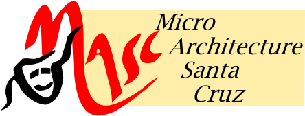
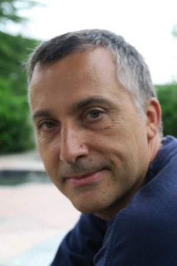

|

|

|
 |
|
|
| Jose Renau is the project leader of the MASC group. |

Engineering II, E2-227
1156 High Street MS: SOE3 Santa Cruz, CA 95065 Tel: 1 (831) 459-1847 Office: E2 227 |
|||
Research InterestsComputer architecture, focusing on productive hardware design flows (LiveHD and ESESC), out-of-order cores, and RISC-V verification. Past projects with Thread Level Speculation, infrared thermal measurements and power modeling, and design effort metrics/models. Looking for good MS/PhD students. We have many projects to help, contact me if you are looking for a MS/PhD thesis. Funding MS/PhD Students
I have funding opportunities for UCSC PhD and MS students working on
more productive hardware design flows. Check the current list of
projects available for MS students at projects.md. Contact me if you are interested.
The MASC group is part of UC Santa Cruz Hardware Systems Collective. The collective is a group of researchers at the Computer Science Department investigating how to design/build/architect/secure/optimize/integrate/program the next generation of hardware.
Recent News
Recent Selected Publications
|
||||